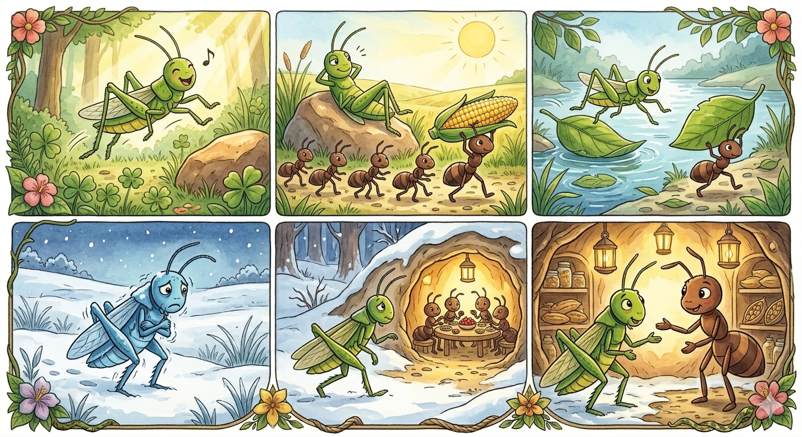

One warm, sunny day, a grasshopper was bounding through the fields. He was happy, and sang a song as he jumped. As he got tired, he decided to lay down on a warm rock in the sunshine and watch the clouds. Just then, an ant passed by, working very hard to carry an ear of corn to his nest. The grasshopper was so enjoying his day that he called out to the ant, “Hey! Why are you working so hard? It’s a beautiful day! Come enjoy the sunshine with me!” The ant called back, “We need to store food for the winter. In not so many days, it will be cold, and we will be hungry.” The grasshopper thought that was silly. “Why, there’s plenty of food!” he cried. He went back to lazing in the sunshine. The ant shook his head, and went back to work. The next day, it was again sunny and the grasshopper decided to visit the riverside. He bounded from leaf to leaf over the crisp cool water, not a care in the world. Once again, he saw the ant pass by. This time, the ant was carrying a large leaf. The grasshopper called out again, “Hello friend! Why are you working so hard again today? Come sit in the shade and enjoy the sound of the river!” Once again, the ant refused. “These pretty days are not so many, Grasshopper. Soon, the cold will come. We must be ready.” The ant returned to his work. On the third day, when the grasshopper awoke, the sun was not shining. It was not warm. Winter had come overnight, and the ground was frozen and covered with snow. The grasshopper shivered. And as he looked for food to eat, he found nothing. He walked for hours through the snow, searching for food and shelter. As he walked, he passed the ant’s nest. Inside, he saw ants warm and happy, and sharing a delicious looking meal. It was then that he understood that the ant was right all along – not all days are sunny. The ant turned then and saw the grasshopper freezing and hungry. He felt pity for the poor grasshopper. “Come, friend,” he called. “There is room here, and there is food. I’ve saved enough for many seasons. Come in and eat.” And so the grasshopper was welcomed into the ant’s home, and the ant’s preparations kept the ant, his family, and the grasshopper warm and fed the whole winter long